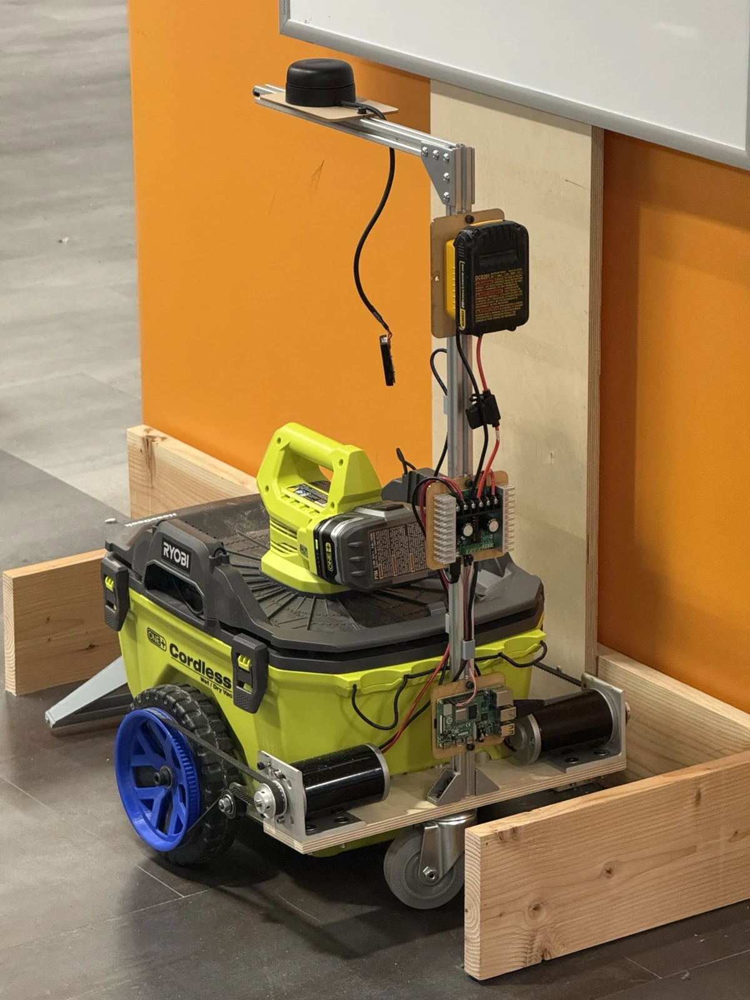
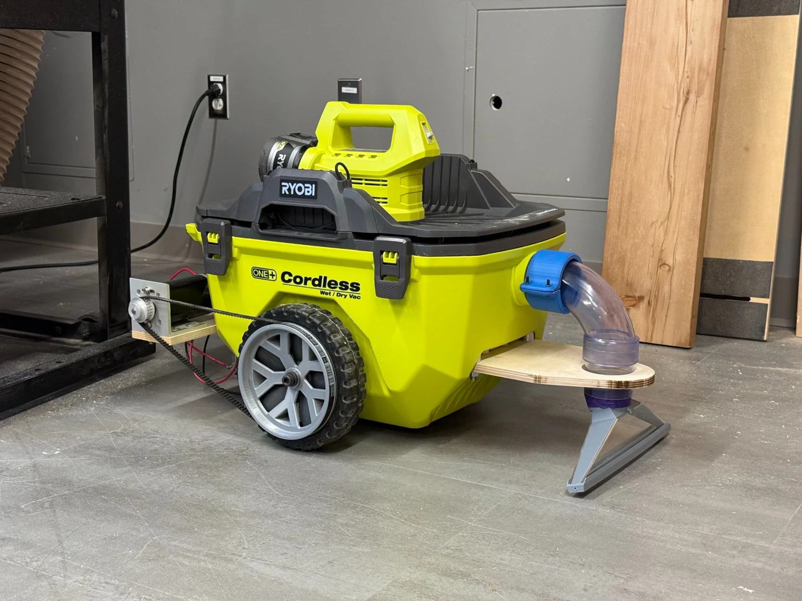
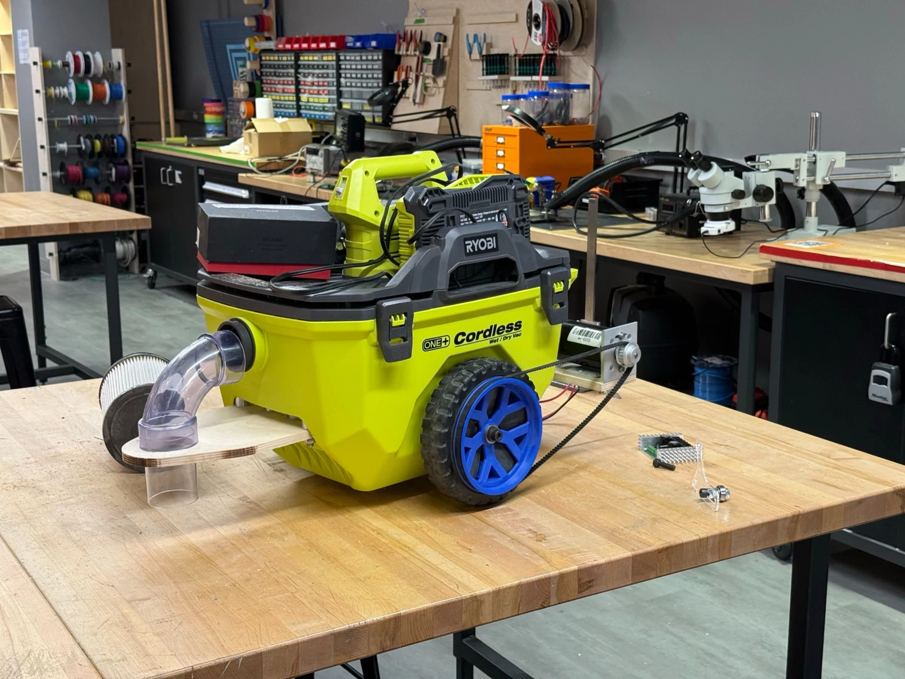
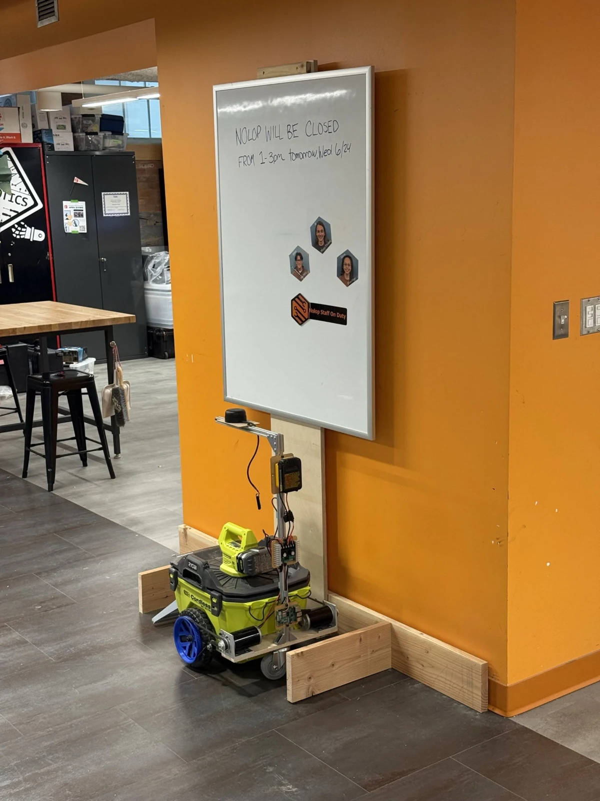
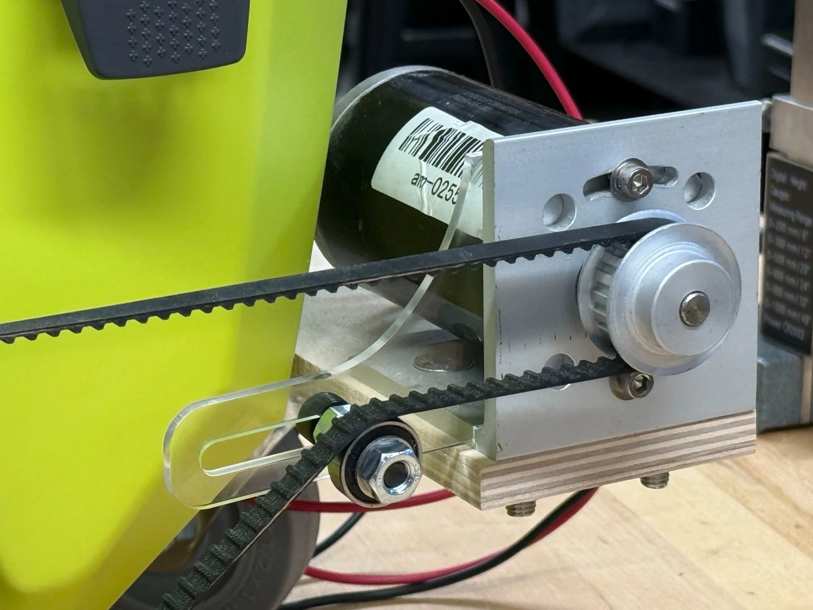
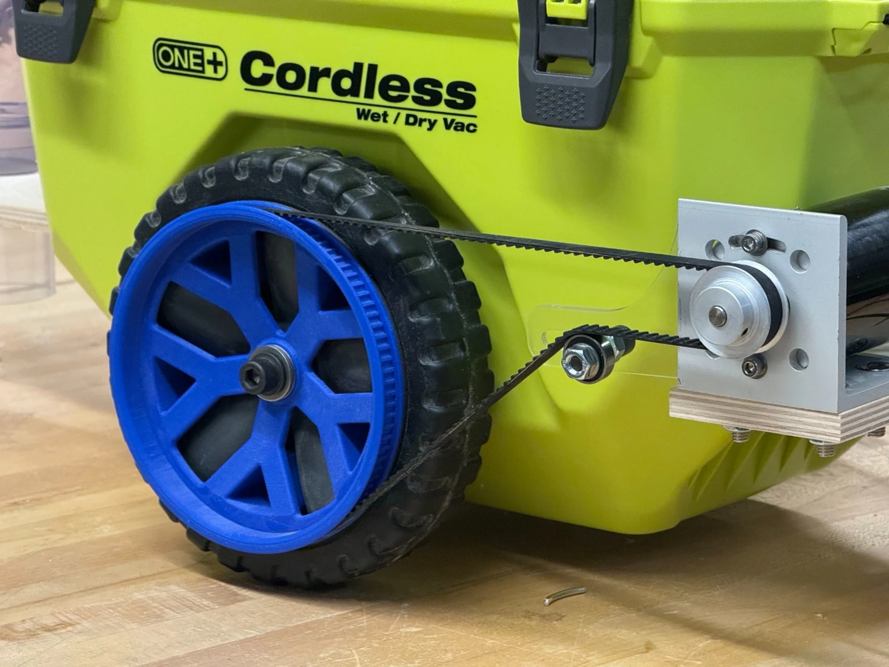

Autonomous Shop Vac
Drivetrain design for autonomous woodshop cleaning · Nolop FAST Facility · Summer 2026
I led the drivetrain work for a three-person project that converted a standard Ryobi shop vacuum into an autonomous cleaning robot for Nolop’s woodshop.




Project context & my role
During summer 2026, I worked as a Makerspace Development and Engineering Intern at the Nolop FAST Facility. Sawdust management was a recurring concern in the woodshop, known as the “Red Zone.” Staff regularly swept the space, and our team was tasked with developing an autonomous cleaning solution as part of a broader effort to manage dust.
I worked alongside two fellow interns to turn a Ryobi shop vacuum into a Roomba-style cleaning robot. My main responsibility was the drivetrain: adapting the existing wheels for powered motion, integrating the motors and belts, and making belt tension adjustable. The complete robot, including its electronics and navigation system, was a team effort.
Driving the existing wheels
We retained the vacuum’s original wheels and added a mounting plate carrying two large DC motors. Custom 3D-printed hubs fitted into the existing wheels, allowing timing belts to transfer motion from the motors to the wheels.
My drivetrain work focused on the interfaces between those parts: the wheel hubs, belt drives, motors, and motor mounts. The conversion had to bring the new drive hardware together around the geometry of the existing vacuum.
- Wheel hubs: Custom modeled and printed parts connected the original wheels to the belt drive.
- Motor mounting: The mounting plate and motor brackets supported the two drive motors.
- Power transmission: Timing belts connected the motors to the driven wheels, with adjustable tension built into the assembly.
Adjustable belt tensioning
I designed a laser-cut adjustable belt tensioner that mounts to the motor brackets. It lets us set the belt tension for the application and readjust it if the belts develop slack over time.
The slotted plate carries an idler bearing. Repositioning the idler takes up belt slack, and the fastener holds the selected position. This gives us a way to tune the assembled drivetrain and readjust it after the initial setup.


Electronics & navigation
We mounted a length of T-slot aluminum extrusion to the back of the vacuum to support the electronics and sensor hardware.
- Control hardware: A Raspberry Pi 5 and motor driver connected the control system to the drivetrain.
- Electronics power: A mounted DeWalt 20V tool battery powered the electronics. Using Nolop’s standard drill batteries made it easy to swap in a charged pack from the shop’s existing supply.
- 360° LiDAR: An RPLIDAR sensor sat near the standard table height in Nolop, placing the scan at the level of the benches and equipment we wanted the robot to navigate around.
The robot generated a live 2D occupancy grid of the workshop and used it for localization and grid-based cleaning paths. The sensor mounting height was chosen around the shop’s tables and tools, which provided the geometry for mapping and navigation.
Project outcome
By the end of the summer, our team had converted the shop vacuum into an autonomous cleaning robot, bringing together the powered wheels, electronics, LiDAR mapping, and navigation.
My contribution was the mechanical system that moved the vacuum: adapting the existing wheels to a belt drive and providing adjustable tensioning so the drivetrain could be set up and readjusted over time.
Engineering skills used
Mechanical integration
Adapting drive hardware to an existing product’s wheels, mounting points, and overall geometry.
CAD & fabrication
Custom wheel hubs, 3D printing, and a laser-cut adjustable belt tensioner.
Belt-drive design
Motor mounting, timing-belt transmission, and provision for tension adjustment.
Team systems integration
Developing the drivetrain as part of a robot combining mechanical, electrical, and navigation systems.